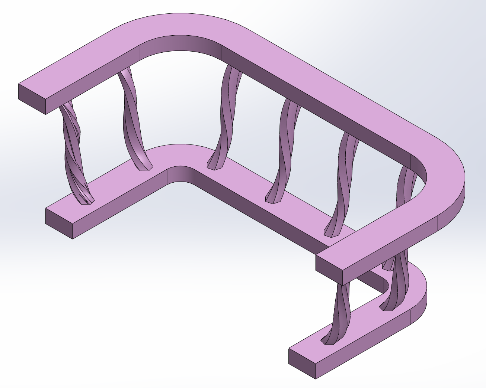
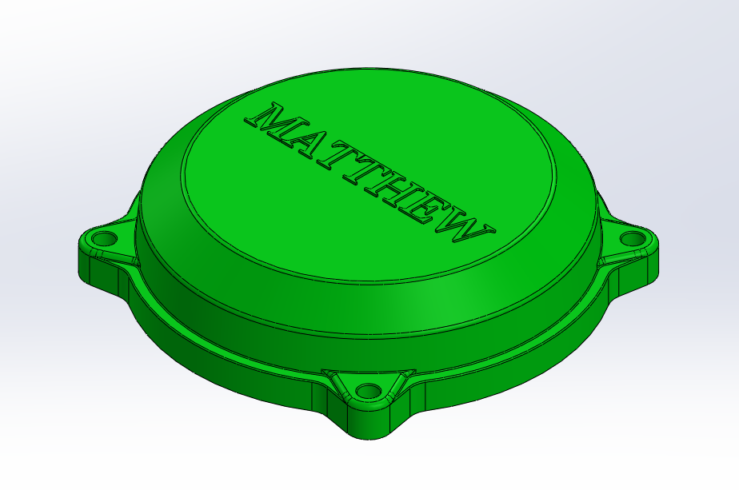
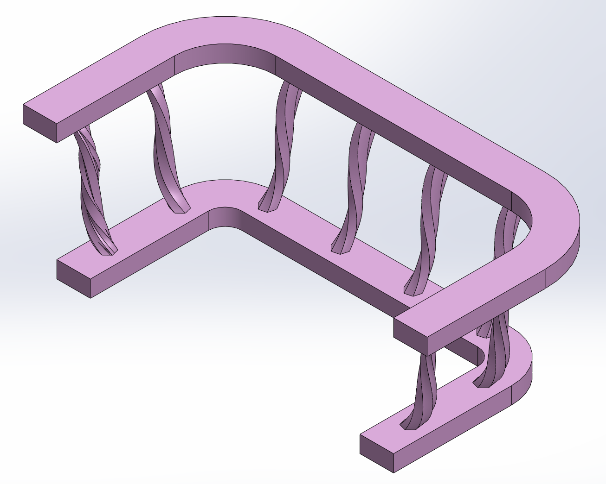
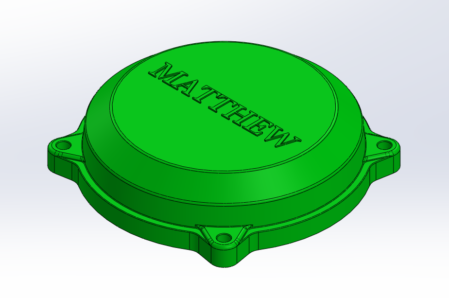

Sample Project Title
Short description of what it is, what you did, and the outcome. Add metrics if possible.
Onshape
Arduino
Python

My name is Matthew Nizich, and I am a junior studying Mechanical Engineering at Boston University. I’m passionate about robotics, mechanical systems, and hands-on design, with a strong interest in making agile and autonomous mechanical systems. Outside of academics, I’ve spent time mentoring and teaching students in robotics and electronics, leading week-long courses where I guide them through engineering principles using elements such as Arduino, truss designs, and CAD. In my spare time, I enjoy practicing Kendo and tinkering with my hobby builds and art pieces, which often lead me back to the lab I work at thanks to all the wonderful machinery available there. As a lab advisor in my university's makerspace, my workplace is where I have honed my skills with 3D printing, laser cutting, and a wide range of other machinery. I also spend time in the workshop as a member of the mechanical team for the Mars Rover Club, applying my mechanical and problem-solving skills to collaborative design challenges. Through these experiences and more, I continue to cultivate my engineering skills while exploring new ways to design, build, and innovate.
A few things I’ve built or contributed to.
Short description of what it is, what you did, and the outcome. Add metrics if possible.
Boston University | Summer 2025
Taught Onshape CAD, Arduino, and engineering concepts to high school students, inspiring interest in STEM through hands-on projects and mentoring.
Boston, MA | Summer 2024
Instructed students in week-long robotics and electronics courses, fostering a fun learning environment while organizing paperwork to track student progress.
Boston University | 2024 – Present
Guided students in the safe and effective use of makerspace tools including 3D printers, laser cutters, and prototyping equipment; advised on design and fabrication best practices.
Brooklyn, NY | Summer 2023
Assembled robotics kits, took inventory, and used machine tools to build various electronic parts.
CAD (Onshape/SolidWorks), FEA, GD&T, DFM, machining, 3D printing.
Arduino, microcontrollers, kinematics, control systems, sensors, actuator selection.
Python, MATLAB, C/C++, Git, basic web (HTML/CSS/JS).
A showcase of my CAD designs and projects made in SolidWorks.

 



A selection of models built for my ME357 CAD class.
4-bar linkage designed to mimic a hammer striking an anvil.
FEA simulation conducted on a rocket nozzle I designed with a team for BURPG, my school's rocketry team.

Ball Valve Assembly, modeled, assembled, and animated.
Email: mnizich01@gmail.com
My phone number is 929-317-2577
Prefer a quick intro? Paste this into your email:
Subject: Quick intro — Matthew Nizich Hi Matthew, I found your portfolio and would love to connect about [topic]. — Matthew Nizich, Mechanical Engineering Student